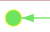
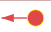
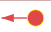

DB
- create graph from db
- connect to db only
Files
- Download
- Upload
Display
-
fit screen ...
- see all elements
- see all selected
- layout ...
- cose-bilkent
- cose
- grid
- circle
- concentric
- breadthfirst
- dagre
- move ...
- resize ...
- horizontally
- wider
- narrower
- globally
- bigger
- smaller
- vertically
- taller
- shorter
- horizontally
- align ...
- horizontally
- vertically
- distribute ...
- horizontally
- vertically
- rotate ...
- Left
- Right
- resize ...
Nodes
- select ...
- none
- all
- swap selected
- hide ...
- not selected
- selected
- none
- swap hidden
-
from selected edges...
- select source nodes
- both sides
- select target nodes
- filter by ...
- name ...
- native category ...
- orphan
- root
- leaf
- dry association
- all associations
- has triggers
- custom category ...
- with edges ...
- none
- looping
- outgoing count...
-
number of edges
-
- incoming count...
-
number of edges
-
- label ...
- show
- hide
- font +
- font -
- list
- follow & show ...
- outgoing
- both
- Incoming
- association
- long paths
- pk <- fk chains
- delete
Edges
- select ...
- none
- all
- swap selected
-
hide ...
- not selected
- selected
- none
- swap hidden
-
from selected nodes...
- outgoing edges
- both directions
- incoming edges
- between two selected nodes
- filter by ...
- name ...
- native category ...
- nullable
- on delete cascade
- trigger_impact
- simplified associations
- edge details ...
- 1 per FK
- 1 per column
- label ...
- show
- hide
- font +
- font -
- list
- data model ...
- triggers ...
- generate impacts
- remove impacts
- associations ...
- simplify
- restore
- triggers ...
- delete
⏳ Loading graph...
- üîçtable definition
- ⚡table triggers
-

 

- 1/FK - 1/Col
- label